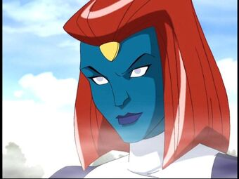

Mística
Mystique descobriu outro jovem mutante, que deveria ter a capacidade de absorver as memórias das pessoas e as habilidades dos mutantes, e enviou a criança para viver com um vidente mutante cego chamado Destiny. Mystique acabou recrutando uma garota chamada Rogue para sua Irmandade, mas a perdeu para os X-Men quando ela tentou matar Ciclope em uma viagem de campo.


Personalidade
Mystique tem problemas impulsivos extraordinários, o que a leva a ser derrotada e espancada com extrema facilidade pelos outros. Ela também possui um grau de complexo de superioridade, pois sempre sente necessidade de estar no controle dos outros, mesmo quando há ao seu redor quem tem maior autoridade. Além disso, ela pode guardar rancor contra aqueles que ficam em seu caminho.
Roupas de Mystique Como Mystique é uma metamorfa, é difícil supor que aparência ela assume é a natural. Porém, sempre que ela mostra que é uma mutante, ela sempre assume uma forma com pele azul brilhante e cabelos ruivos, então pode-se inferir que sempre que ela tiver essas características, ela estará em sua forma natural.
Ao longo da primeira temporada, ela assumiu muitas formas diferentes, mas sua forma natural tinha pele azul brilhante, cabelo ruivo cortado até os ombros, estendendo-se ligeiramente nas costas, e olhos amarelos claros sem pupilas. Ela tinha uma joia em forma de triângulo (supostamente como a caveira em sua testa de seus primeiros anos nos quadrinhos convencionais ) no topo de sua testa. Ela geralmente usava um vestido branco sem mangas com gola alta, macacão roxo por baixo do vestido, botas brancas até a altura da coxa e luvas brancas que iam quase até os ombros sem cobrir os dedos.
Quando ela voltou, sua forma ainda era de pele azul e cabelo ruivo, mas tinha um corte ligeiramente diferente. Sua roupa agora era preta e de duas peças, com a blusa de gola alta e mostrando a cintura extrema, saia com duas fendas extremamente altas nas coxas, duas fendas no topo da saia, e mal a cobria. Suas botas estavam na altura do tornozelo e suas luvas haviam sido jogadas fora, com apenas o material enrolado em torno de seu pulso esquerdo.

Home